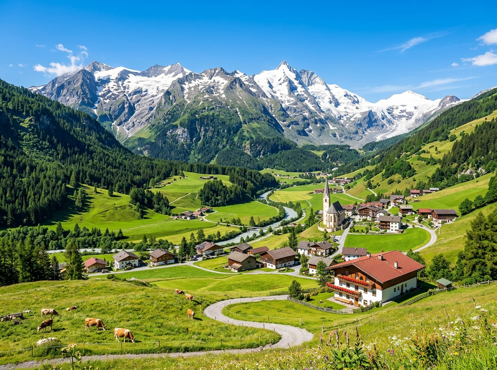
Hier stehen die wichtigsten Daten zu deinem Land. In der App baust du daraus deinen eigenen Steckbrief.
| Hauptstadt | Wien |
| Kontinent | Europa |
| Sprache | Deutsch |
| Währung | Euro |
| Einwohner | etwa 9 Millionen Menschen |
| Fläche | etwa 84.000 km², ein bisschen größer als Bayern |
| Großer Berg | der Großglockner, mit 3.798 Metern der höchste Berg des Landes |
| Nachbarländer | Deutschland, Tschechien, Slowakei, Ungarn, Slowenien, Italien, Schweiz und Liechtenstein |
In Österreich gibt es viele berühmte Orte. Diese vier solltest du kennen.
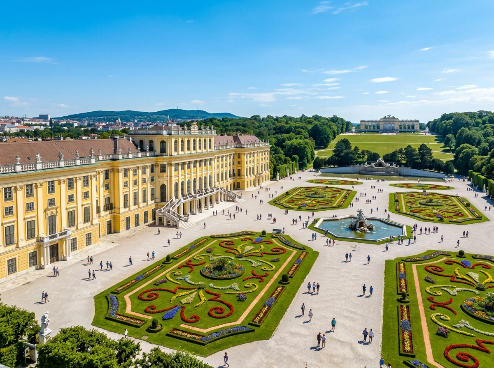
Schloss SchönbrunnSchloss Schönbrunn ist ein riesiges, gelbes Schloss in Wien. Früher wohnten hier die Kaiser von Österreich. Heute kommen jedes Jahr Millionen Besucher und gehen durch die Säle und den großen Park. Hinter dem Schloss gibt es sogar einen alten Tiergarten.
Grüne Wörter für die Appgelbes Schlossin WienKaisergroßer ParkMillionen Besucher
HallstattHallstatt ist ein kleines Dorf an einem See, rundherum stehen hohe Berge. Die bunten Häuser spiegeln sich im Wasser. Der Ort sieht so schön aus, dass Menschen aus aller Welt extra dorthin reisen. Schon vor langer Zeit haben die Menschen hier nach Salz gegraben.
Grüne Wörter für die Appkleines Dorfam SeeBergeSalzviele Besucher
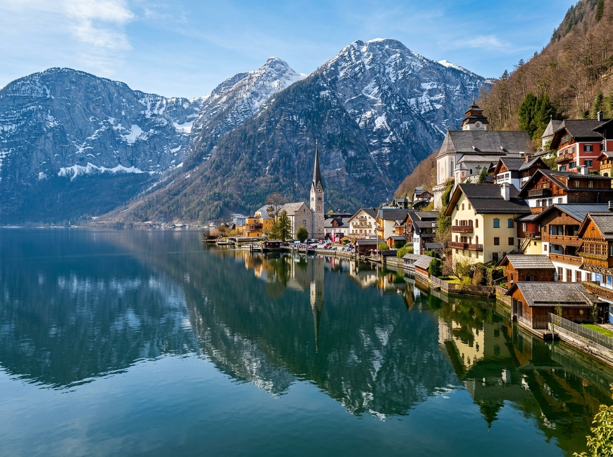
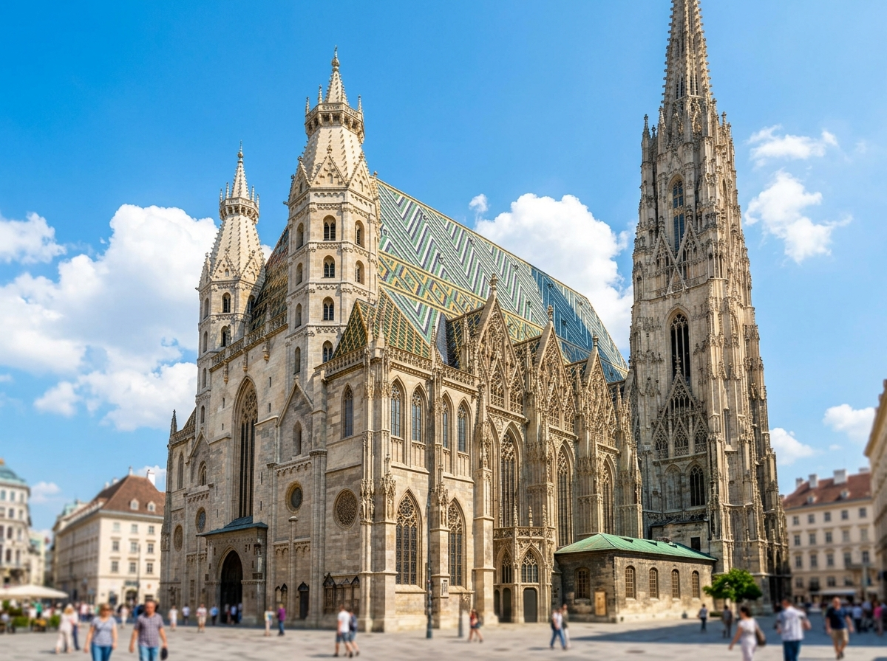
StephansdomDer Stephansdom steht mitten in Wien und ist eine sehr alte Kirche. Sein Turm ist über 136 Meter hoch. Das Dach ist mit bunten Ziegeln gedeckt und zeigt ein großes Muster. Viele Menschen klettern die Stufen im Turm hinauf und schauen über die Stadt.
Grüne Wörter für die Appalte Kirchein Wienhoher Turmbuntes Dachüber die Stadt
Großglockner-HochalpenstraßeDie Großglockner-Hochalpenstraße ist eine kurvige Bergstraße hoch hinauf in die Alpen. Sie führt an vielen Kurven vorbei immer weiter nach oben. Von ganz oben sieht man einen Gletscher und viele Berggipfel. Im Sommer fahren viele Autos und Motorräder diese Straße entlang.
Grüne Wörter für die AppBergstraßeviele Kurvenin den AlpenGletscherBerggipfel
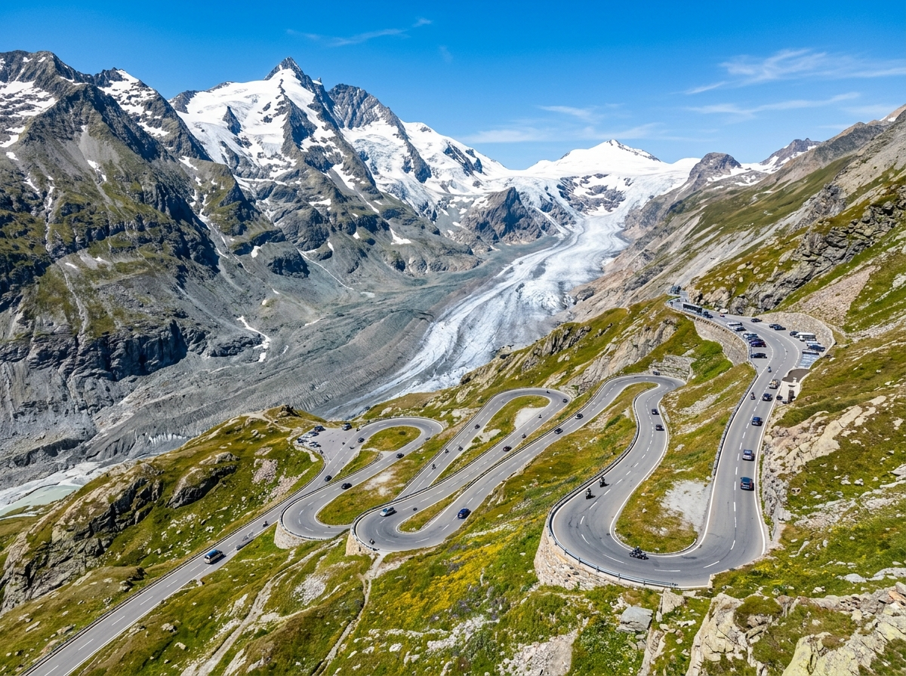
In den Bergen und Wäldern Österreichs leben Tiere, die du bei uns nicht immer in der Natur siehst.
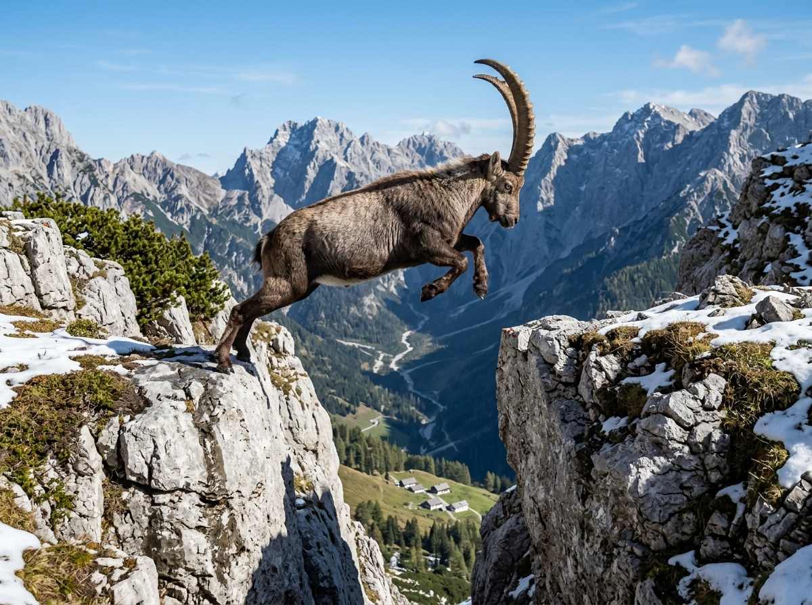
GämseDie Gämse ist ein Tier, das ein bisschen wie eine Ziege aussieht. Sie lebt hoch oben in den Alpen. Mit ihren festen Hufen springt sie geschickt von Fels zu Fels. So findet sie auch an steilen Hängen genug Futter.
Grüne Wörter für die Appwie eine Ziegein den Alpenspringtvon Fels zu Felssteile Hänge
SteinadlerDer Steinadler ist ein großer Greifvogel und lebt in den Bergen von Österreich. Er kreist hoch oben am Himmel und breitet dabei seine weiten Flügel aus. Mit seinen scharfen Augen sieht er kleine Tiere weit unten am Boden. Dann stürzt er blitzschnell hinab.
Grüne Wörter für die AppGreifvogelin den Bergenkreist am Himmelscharfe Augenweite Flügel
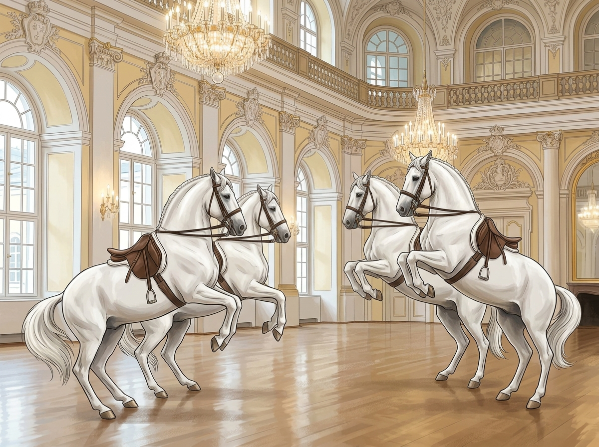
LipizzanerLipizzaner sind weiße Pferde, die in Wien ausgebildet werden. Das geschieht in der Spanischen Hofreitschule. Dort lernen sie schwierige Kunststücke und tanzen fast wie im Zirkus. Als Fohlen sind sie noch dunkel und werden erst später ganz weiß.
Grüne Wörter für die Appweiße Pferdein WienHofreitschuleKunststückeerst dunkel
In der App kannst du beim Essen das Foto nehmen oder dein Gericht selbst malen.
Wiener SchnitzelDas Wiener Schnitzel ist das bekannteste Gericht aus Österreich. Es ist ein dünnes Stück Fleisch, das in Ei und Semmelbröseln gewendet wird. Dann wird es in heißem Fett goldgelb gebacken. Sein Name kommt von der Hauptstadt Wien.
Grüne Wörter für die Appdünnes FleischSemmelbröselgebackengoldgelbaus Wien
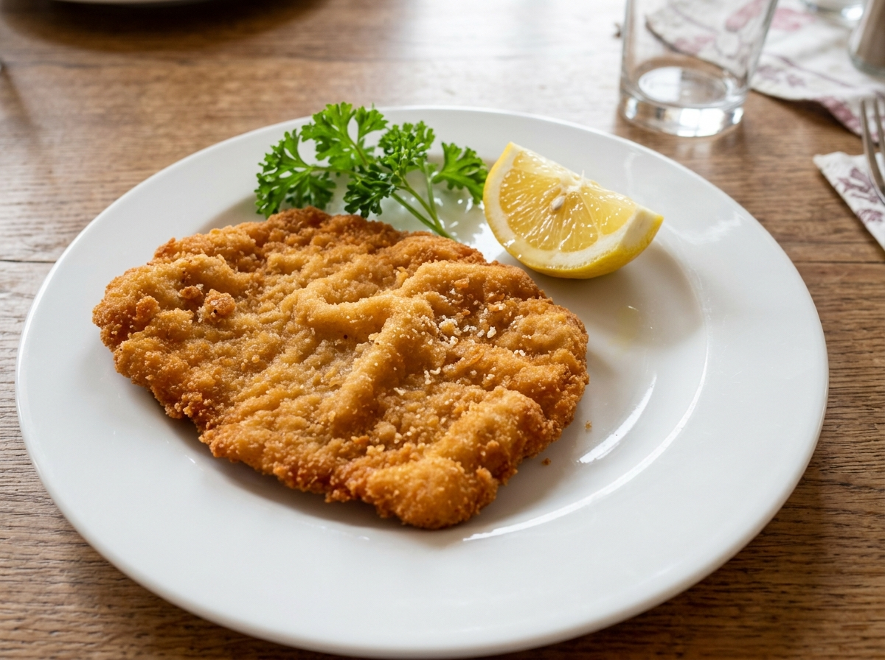
ApfelstrudelDer Apfelstrudel ist eine süße Nachspeise aus dünnem Teig. In den Teig kommen Äpfel, Zimt und Zucker, dann wird alles zu einer Rolle gewickelt. Am liebsten isst man ihn warm. Dazu gibt es oft Vanillesauce oder Schlagsahne.
Grüne Wörter für die Appdünner TeigÄpfelZimtgerolltwarm
KaiserschmarrnDer Kaiserschmarrn ist ein lockerer Pfannkuchen, der in kleine Stücke zerrissen wird. Obendrauf kommt viel Puderzucker. Dazu isst man gern Apfelmus oder Zwetschgenmus. Sein Name kommt vom Kaiser Franz Joseph, der ihn sehr gemocht haben soll.
Grüne Wörter für die AppPfannkuchenzerrissenPuderzuckerApfelmusvom Kaiser
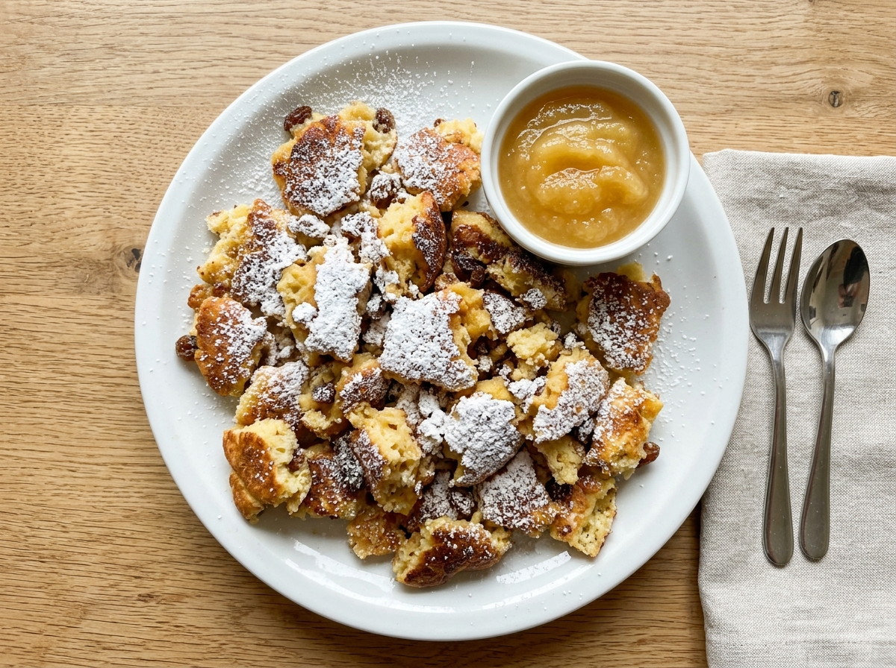
⚽ Gut zu wissen
Die Nationalmannschaft von Österreich heißt nach den Farben der Flagge Rot-Weiß-Rot und spielt im rot-weißen Trikot. Bei der WM 2026 ist Österreich wieder dabei, zum achten Mal überhaupt und zum ersten Mal seit 1998. Den größten Erfolg gab es 1954, da wurde das Team Dritter bei der Weltmeisterschaft. Heute zählt Österreich wieder zu den guten Mannschaften in Europa.
Grüne Wörter für die AppRot-Weiß-Rotrot-weißes Trikot8. WMseit 1998 wieder dabei1954 Dritter
🌟 Profi-Wissen
David Alaba ist Österreichs bekanntester Fußballer. Er spielt in Spanien bei Real Madrid und ist sehr vielseitig. Alaba kann hinten verteidigen und auch in der Mitte spielen. Sein Vater kommt aus Nigeria, seine Mutter aus den Philippinen.
Grüne Wörter für die AppDavid AlabaReal Madridsehr vielseitigmultikulturellWeltklasse
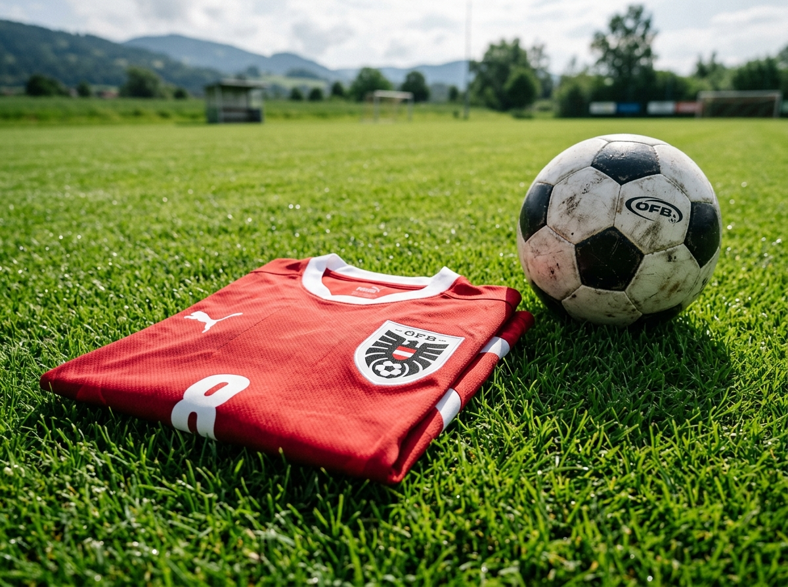
Schule in ÖsterreichDie Schule in Österreich ist ganz ähnlich wie bei uns in Bayern. Die Kinder gehen von Montag bis Freitag in die Schule und haben am Wochenende frei. In der Pause essen viele Kinder eine Jause, so heißt dort das Pausenbrot. Auch in Österreich spricht man Deutsch, aber manche Wörter klingen ein bisschen anders.
Grüne Wörter für die AppMontag bis FreitagJausePausenbrotDeutschandere Wörter
Berge, Wandern und SkiÖsterreich hat viele hohe Berge, darum sind die Kinder oft draußen in der Natur. Im Sommer wandern viele Familien zusammen auf einen Gipfel oder zu einer Almhütte. Im Winter liegt viel Schnee, dann fahren die Kinder gern Ski oder rodeln den Hang hinunter. Manche Schulen machen sogar eine eigene Skiwoche.
Grüne Wörter für die Apphohe BergewandernAlmhütteSki fahrenSkiwoche
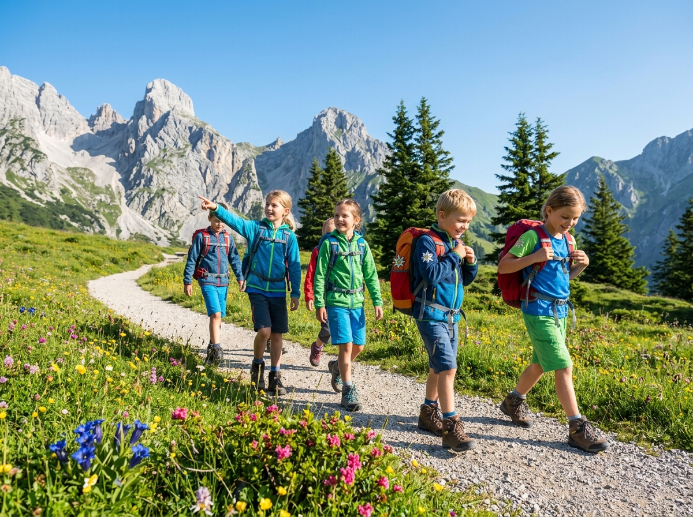